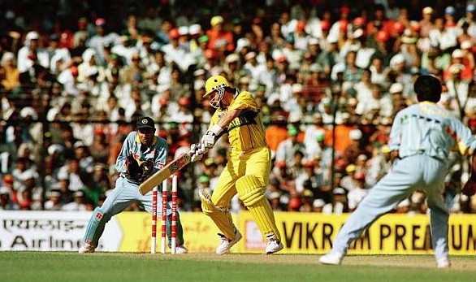
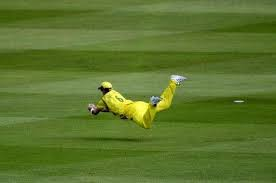

Mark Waugh
Role: Right-Handed Batsman, Part-Time Bowler
Bio: Mark Waugh, known for his elegance and timing, was one of the most stylish batsmen of his generation. Often overshadowed by his twin brother Steve, Mark Waugh was equally impactful for Australia, especially in ODI cricket, where he excelled as an opening batsman and contributed with handy off-spin.
Career Stats
| Format | Matches | Innings | Not Outs | Runs | High Score | Average | Strike Rate | 100s | 50s | Wickets | Best Bowling |
|---|---|---|---|---|---|---|---|---|---|---|---|
| Test | 128 | 209 | 17 | 8029 | 153* | 41.81 | 48.21 | 20 | 47 | 59 | 5/40 |
| ODI | 244 | 236 | 21 | 8500 | 173 | 39.35 | 76.90 | 18 | 50 | 85 | 4/33 |
| T20 | - | - | - | - | - | - | - | - | - | - | - |
Memorable Moments

Mark Waugh's brilliant century against India in the 1996 World Cup, showcasing his sublime stroke play.
Known for his sharp reflexes in the slips, Mark Waugh was a reliable fielder, setting records for most catches in Test cricket during his time.